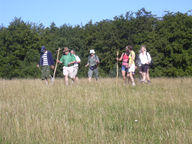

Hem
Sankt Olofs pilgrimer är en förening vars syfte är att främja pilgrimsvandrandet till Sankt Olof på Österlen.
Vi arrangerar pilgrimsvandringar varje sommar till Sankt Olofs kyrka på Sankt Olofsdagen den 29:e juli.
